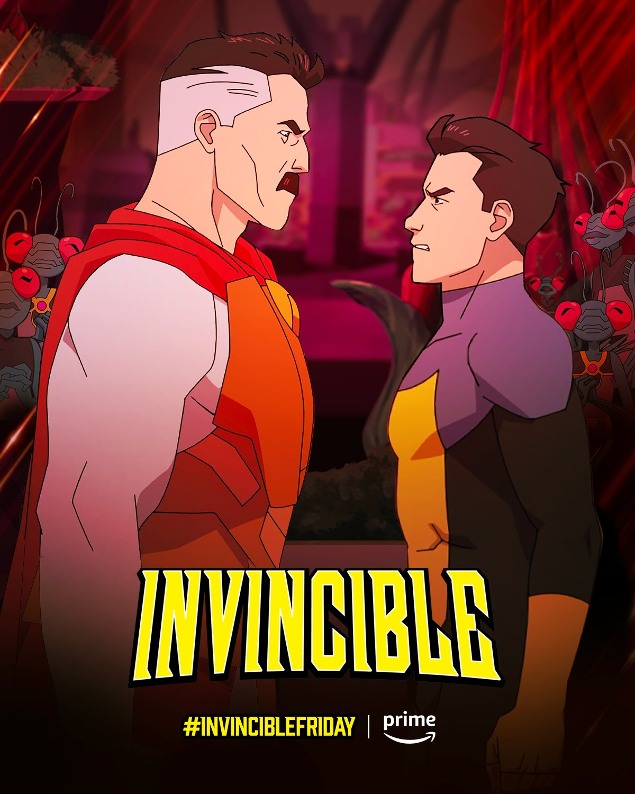
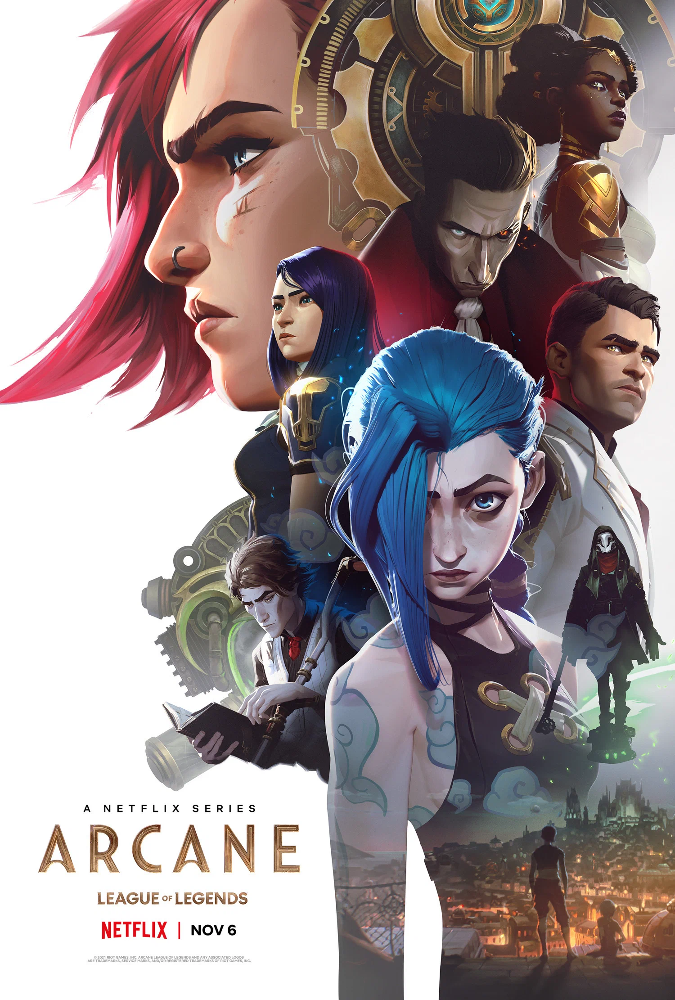
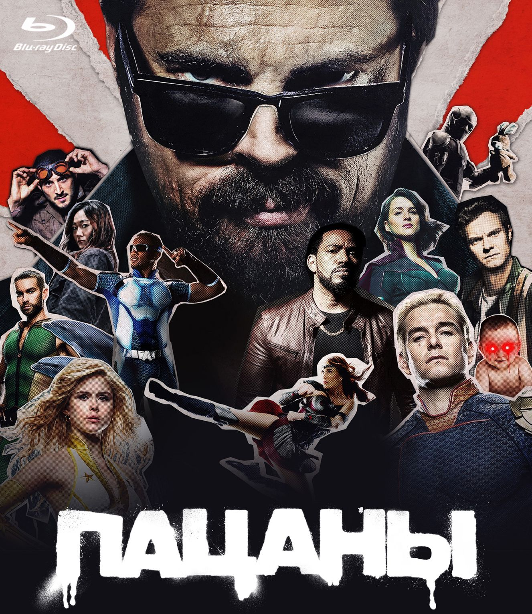

Неуязвимый (Invincible)
Анимационный сериал про молодого супергероя Марка Грейсона, который пытается справиться с наследием своего отца — самого могущественного супергероя на планете.
IMDb: 8.7

Аркейн (Arcane)
Фантастический сериал по мотивам игры League of Legends. Рассказывает историю сестер Вай и Джинкс, а также конфликт между городами Пилтовер и Заун.
IMDb: 9.0

The Boys
Сатирический взгляд на мир супергероев, где команда "Парни" следит за злодеями в масках и пытается разоблачить корпорации, контролирующие героев.
IMDb: 8.7